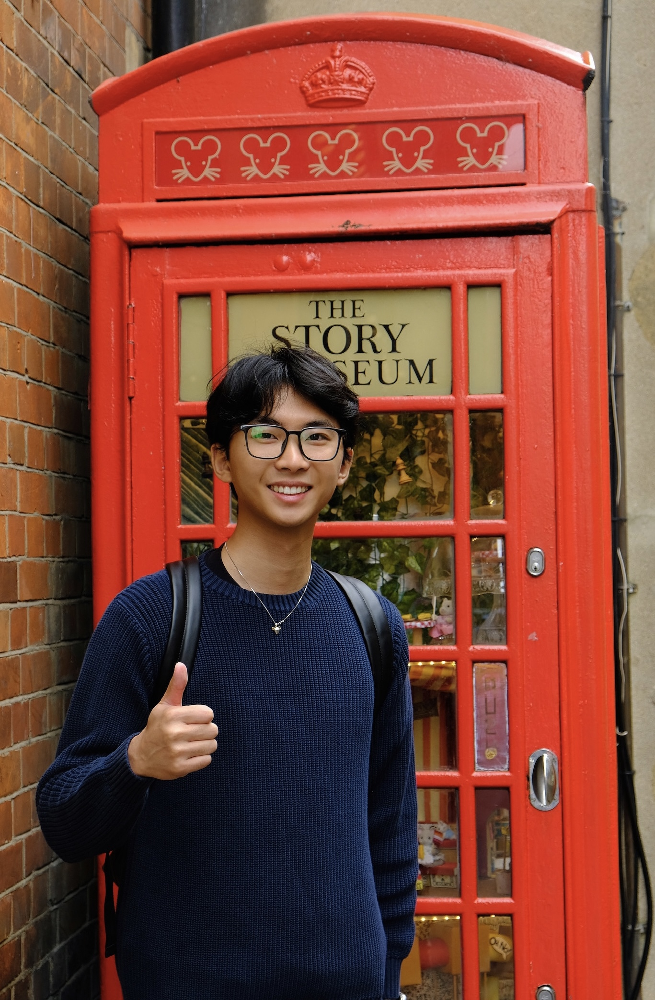

I am a second-year M.S. student in Computer Science at Cornell University. My research focuses on Natural Language Processing and Computational Social Science, particularly on studying and modeling conversational behaviors and social interactions. I am fortunate to be advised by Prof. Cristian Danescu-Niculescu-Mizil (CS Major) and Prof. Lillian Lee (INFO SCI Minor) for my current MS study.
> Master of Science in Computer Science @ Cornell University
> Undergraduate in Computer Science ∧ Mathematics @ Cornell University
A Similarity Measure for Comparing Conversational Dynamics
EMNLP 2025 (findings)
Sang Min Jung, Kaixiang Zhang, Cristian Danescu-Niculescu-Mizil
Time is On My Side: Dynamics of Talk-Time Sharing in Video-chat Conversations
CSCW 2025
Kaixiang Zhang, Justine Zhang, Cristian Danescu-Niculescu-Mizil

Credit: Anastasia He
1. © Kaixiang (Sean) Zhang 张垲翔
2. † indicates co-first authorship